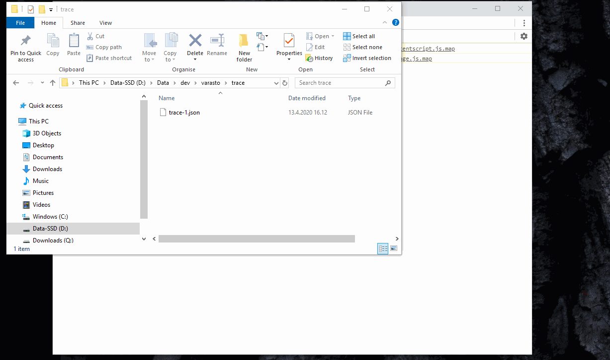
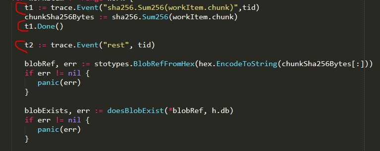
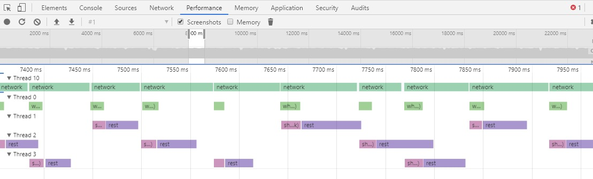
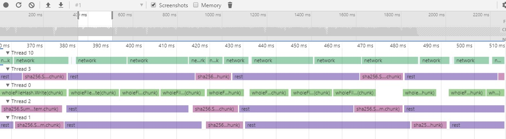

Tracking down inefficiencies in parallelization
I was improving performance for Varasto and there was one unit of work that was easily parallelizable (= run on all CPU cores) to gain some speed. I’ll share my learnings in graphical tooling to help measure/debug how efficiently your parallelization works.
go tool trace
The graphs I’m about to show, Go actually has internal tooling for - go tool trace, to generate (and even show) comparable traces without instrumenting your code.
Custom tracing instrumentation
$ go tool trace had so much data I had trouble focusing on the exact a few goroutines
whose performance (and units of work) I was trying to monitor, so I opted to manually
instrument my code with Michael Stapelberg’s small
library for generating Chrome debugger-compatible traces.
The tl;dr is that you can just emit a JSON trace file from whichever app you want to trace and drop it in Chrome’s developer tools:

I sprinkled instrumentation calls like this around my code:

The tid is thread ID - which was not an actual thread ID but a number I made up to correlate
workers in Chrome´s devtools.
What I learned with instrumentation
I started from knowing that my workload is currently CPU bound. I had something that looked like this:

Key takeaway is that most of the rows were looking really empty - all cores were not being utilized. The only full row was the network reading thread. Note that this does not mean I’m bound by network I/O - rather that the CPU is spent on the networking code.
I realized that I have two TLS hops in my testing setup - my loadbalancer and my app are both over TLS - so turns out that TLS really does incur a performance hit when pushing hundreds of megabytes a second over two TLS hops -on a not high-end CPU. 😁
(p.s. only one of the two TLS hops was inside my app - the other was another process that shows as system CPU usage, but not directly measurable from within my app-under-test)
After removing both TLS hops by just using insecure http (only for testing purposes) and sending traffic to my app directly instead of via the loadbalancer, I was able to confirm with tracing that my improved parallelization is effective (which my tracing was all about):

Now the CPU cores were all saturated within my app-under-test.

Thanks for reading! 😍
If you like my writing, consider following me on Twitter.
Stay updated on my blog posts & projects - sign up for
my newsletter. 🚀
No spam, unsubscribe any time.
RSS also available.